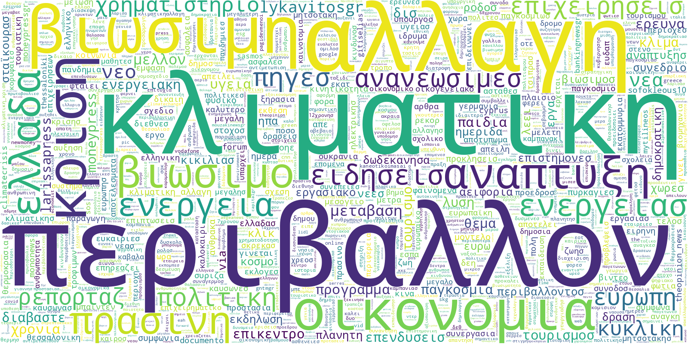

Analysis Results
Results for file: {{ filepath }}
Original Data Preview
Preprocessed Data Preview
Column Information
{{ column }}
Type: {{ info.dtype }}
Non-null values: {{ info.non_null }}
Unique values: {{ info.unique }}
Word Cloud

Quick Statistics
{{ column_info.values()|map(attribute='non_null')|sum }}
Total Records
{{ column_info|length }}
Number of Columns
{{ column_info.values()|map(attribute='unique')|sum }}
Unique Values
Summary
{% if summary_result.error %}{{ summary_result.summary }}
Topic Modelling Results
Identified Topics
Topic {{ loop.index }}
Topic Modelling Metrics
Coherence Score
{% if results_topic_modelling.coherence_score is not none %} {{ "%.4f"|format(results_topic_modelling.coherence_score) }} {% else %} N/A {% endif %}
Measures the semantic coherence of topics
Topic Diversity
{{ "%.4f"|format(results_topic_modelling.topic_diversity) }}
Measures the uniqueness of words across topics
Output Directory
{{ results_topic_modelling.output_dir }}
Location of topic-specific CSV files
Topic Distribution
Topic Modelling Configuration
Sentiment Analysis Configuration
Sentiment Analysis Results
Summary
Positive Texts
{{ sentiment_results.summary.positive_count }} ({{ "%.1f"|format(sentiment_results.summary.positive_percentage) }}%)
Negative Texts
{{ sentiment_results.summary.negative_count }} ({{ "%.1f"|format(sentiment_results.summary.negative_percentage) }}%)
Total Texts
{{ sentiment_results.summary.total_texts }}
Uncertainty Analysis
Total uncertain predictions: {{ sentiment_results.uncertainty.total_uncertain }}
Uncertain predictions ratio: {{ "%.1f"|format(sentiment_results.uncertainty.uncertain_ratio * 100) }}%
Sentiment Distribution
Probability Distribution
Uncertainty Distribution
Predictions Preview
| Text | Sentiment | Probability | {% if sentiment_results.uncertainty %}Uncertainty | {% endif %}
|---|---|---|---|
| {{ row.text }} | {{ row.sentiment_label }} | {{ "%.2f"|format(row.prediction_probability) }} | {% if sentiment_results.uncertainty %}{{ "%.2f"|format(row.uncertainty) }} | {% endif %}